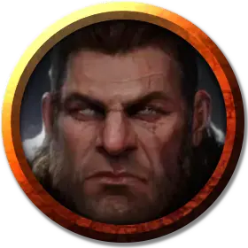

Гунвальд Халрагсон
Gunvald Halraggson
Средний Гуманоид (Человек), нейтральный, именной НИП

Класс Доспеха 13 (шкурный доспех, щит)
Хиты 76 (9к8 + 36)
Скорость 30 футов
| мод | спас | ||
|---|---|---|---|
| СИЛ | 20 | +5 | +5 |
| ЛОВ | 8 | −1 | −1 |
| ТЕЛ | 18 | +4 | +4 |
| мод | спас | ||
|---|---|---|---|
| ИНТ | 9 | −1 | −1 |
| МДР | 10 | +0 | +0 |
| ХАР | 16 | +3 | +3 |
Навыки Атлетика +8, Выживание +3, Запугивание +6
Чувства пассивное Восприятие 10
Языки Общий
Опасность 5 (1800 опыта)
Бонус мастерства +3
Особенности
Неукротимый (3/день). Гунвальд может перебросить проваленный им спасбросок. Он обязан использовать новое значение.
Угрожающие удары (1/ход). Гунвальд причиняет дополнительно 6 (1к12) урона, когда он попадает по цели атакой оружием. Если цель — существо, она должна преуспеть в спасброске Мудрости Сл 15, иначе станет напуганной до начала следующего хода Гунвальда.
Второе дыхание (перезаряжается после короткого или продолжительного отдыха). Бонусным действием Гунвальд может восстановить себе 15 хитов.
Действия
Мультиатака. Гунвальд совершает три рукопашные атаки.
Боевой топор. Рукопашная атака оружием: +8 к попаданию, досягаемость 5 фт., одна цель. Попадание: 9 (1к8 + 5) рубящего урона или 10 (1к10 + 5) рубящего урона при использовании двумя руками, плюс 6 (1к12) рубящего урона при использовании «Угрожающих ударов».
Метательное копьё. Рукопашная или дальнобойная атака оружием: +8 к попаданию, дистанция 30/120 фт., одна цель. Попадание: 8 (1к6 + 5) колющего урона, плюс 6 (1к12) колющего урона при использовании «Угрожающих ударов»
Описание
То, что сегодня осталось от племени Медведя страдает от внутренних разборок. Беспорядки начались вскоре после того, как группа охотников из племени Медведя извлекла осколки чардалина из замороженных трупов нескольких дварфов. Не обращая внимания на пропитывающую кристаллы демоническую магию, члены племени использовали осколки для изготовления наконечников для своих копий и лезвий топоров. Контакт с кристаллом исказил воинов со временем, превратив их в чардалиновых берсерков. Их жестокость вынудила короля изгнать их из племени, и с тех пор изгои начали совершать набеги на лагеря племени Медведя для захвата бывших соплеменников, которых они приносят в жертву Ориль, чтобы завоевать её благосклонность.
Король Гунвальд Халрагсон
Тридцатилетний король племени Медведя обладает впечатляющей фигурой и славится своим сложением и силой. Он старается быть честным, но часто бывает беспощаден и нелегко меняет свое мнение. У него проблемные отношения с жителями Десяти Городов, и он старается их избегать. Однако всё может измениться, если они помогут ему уничтожить восставших против своих соплеменников чардалиновых берсерков. За последние шесть лет у Гунвальда было три жены, и все они умерли во время беременности. Советники короля опасаются, что боги прокляли Гунвальда и все племя, но на самом деле в смертях виновата влюбленная в короля шаманка племени Улькора, незаметно отравившая его жен. Улькора надеется, что со временем Гунвальд обратит на неё свой любящий взор и позволит ей родить истинного наследника. Если Гунвальд узнает правду о смерти своих жён, он убьёт Улькору.